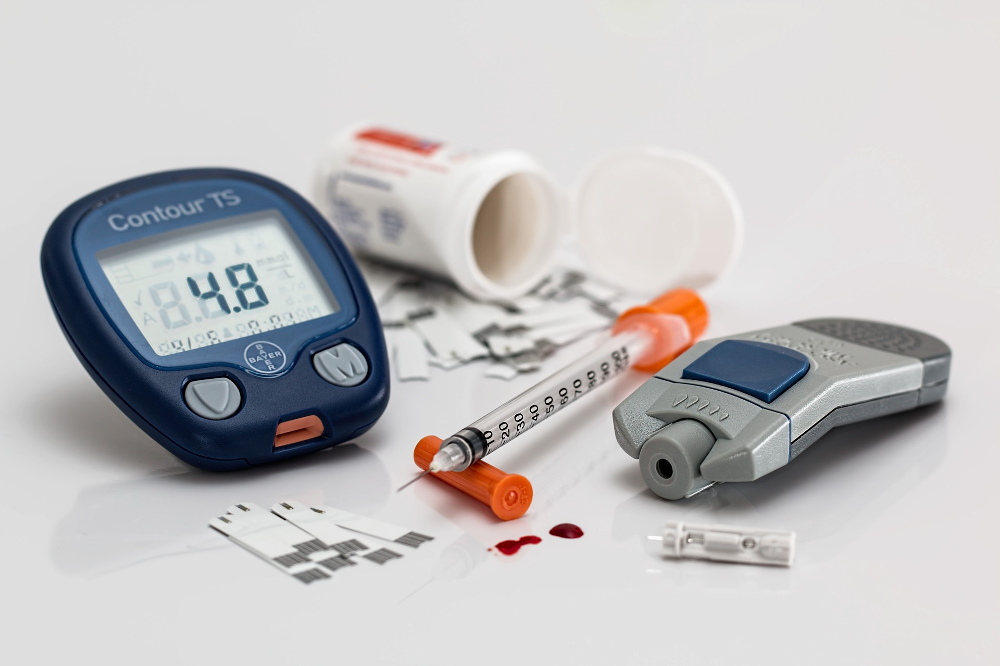
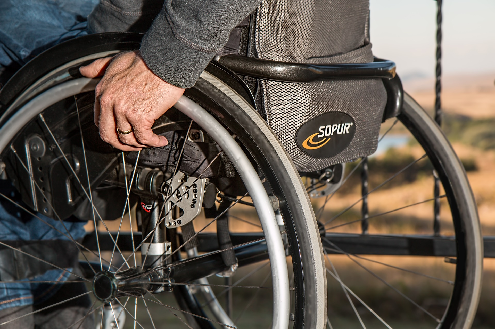
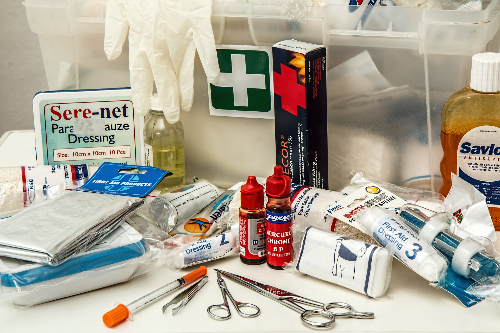

Laboratory
Laboratory tests can be valuable aids in making a diagnosis, but, as
screening tools for detecting hidden disease in asymptomatic
individuals, their usefulness is limited. The value of a test as a
diagnostic aid depends on its sensitivity and specificity.
Sensitivity is the…
Read More

Hypertension
Primary (essential) hypertension is high blood pressure that is
multi-factorial and doesn't have one distinct cause. It's also known
as idiopathic or essential hypertension. Above-normal blood pressure
is typically anything over 120/80 mmHg. This means that the pressure
inside your arteries is higher than it should be…
Read More
Apothecary
The apothecary system, originated as the system of weights and
measures for dispensing and prescribing medications. The English
version divided a pound into 12 ounces, an ounce into eight
drams/drachms, and a dram into three scruples or 60 grains…
Read More

Diabetes
A fasting blood sugar level less than 100 mg/dL (5.6 mmol/L) is
normal. A fasting blood sugar level from 100 to 125 mg/dL (5.6 to
6.9 mmol/L) is considered prediabetes. If it's 126 mg/dL (7 mmol/L)
or higher on two separate tests, you have diabetes…
Read More

Wheelchair
Disabilities may be orthopedic (relating to the bone and muscles) or
they may be neuromuscular (relating to the nerves and muscles). For
example, some of the more common kinds of mobility impairments are
amputations, paralysis, spinal cord injuries, Cerebral Palsy,
Multiple Sclerosis, Muscular Dystrophy, and more…
Read More

First Aid
FIRST AID: DIAGNOSTIC. It contains: diagnostic, history, signs,
symptoms, physical examination, head, neck and spine, chest,
abdomen, pelvis, limbs…
Read More